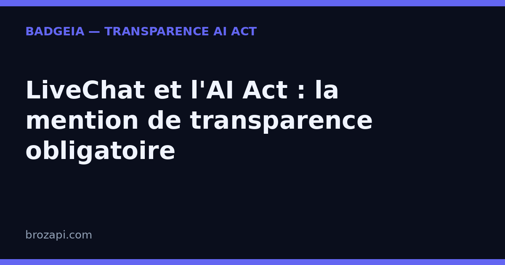

LiveChat et l’AI Act : la mention de transparence obligatoire

Publié le · Mis à jour le 6 septembre 2026 · Lecture : 9 minutes
LiveChat n’est pas un simple widget de chat : c’est le produit historique de Text, l’éditeur polonais fondé à Wrocław en 2002 (anciennement LiveChat Software, rebaptisé Text en 2023). Autour de ce chat en direct, l’entreprise a bâti tout un écosystème d’intelligence artificielle — dont ChatBot, sa plateforme de chatbots lancée en 2017, et Text Copilot, son assistant d’aide aux agents. Plus de 30 000 entreprises dans plus de 150 pays utilisent ces outils.
C’est précisément cette couche d’IA qui rend l’obligation de transparence incontournable. Depuis le 2 août 2026, l’article 50 de l’AI Act impose d’informer clairement vos visiteurs qu’ils interagissent avec une intelligence artificielle. Or un bot ChatBot bien entraîné est justement conçu pour être fluide, naturel — facile à confondre avec un agent humain de votre équipe. Plus il est performant, plus la mention de transparence devient nécessaire.
Voici ce que cela change concrètement quand on utilise LiveChat, et comment vous mettre en règle sans casser une machine qui, elle, répond très bien.
LiveChat et ChatBot, c’est quoi exactement ?
Pour comprendre pourquoi la mention est incontournable, il faut distinguer les deux produits, car ils ne déclenchent pas la même obligation.
LiveChat, le chat en direct. C’est le produit phare : un widget de messagerie en temps réel sur votre site, dans votre application mobile, par e-mail ou sur les réseaux sociaux. Historiquement, c’est un outil où des humains répondent aux visiteurs. Mais LiveChat s’est enrichi de fonctions d’IA : réponses suggérées, suivi des visiteurs, et surtout l’intégration native de ChatBot.
ChatBot, le bot autonome. ChatBot (chatbot.com) est la plateforme de chatbots de Text, lancée en août 2017. Sans coder, vous créez un bot qui répond seul aux visiteurs, 24 h/24, en s’appuyant sur vos données : votre site web, votre base de connaissances, vos fichiers. L’éditeur annonce pouvoir « résoudre jusqu’à 80 % des questions » grâce à un modèle d’IA auto-apprenant. Un seul bot peut gérer jusqu’à 500 conversations simultanées.
Text Copilot, l’assistant des agents. À côté du bot autonome, Text propose Copilot, un assistant d’aide aux agents : il suggère des réponses, remonte le contexte client et répond aux questions de votre équipe — mais il n’envoie jamais rien sans validation humaine.
Résultat : un visiteur qui arrive sur votre site peut être accueilli, compris et dépanné — par une machine — sans jamais avoir vu un humain. C’est exactement la situation que l’article 50 de l’AI Act entend encadrer.
Pourquoi LiveChat déclenche l’article 50
L’article 50 du règlement européen sur l’intelligence artificielle (AI Act, règlement 2024/1689) pose une règle simple : toute personne qui interagit avec un système d’IA doit en être informée, « de manière claire et distincte », au plus tard au moment de la première interaction. L’objectif est d’éviter qu’un internaute soit trompé sur la nature artificielle de son interlocuteur.
Un bot ChatBot étant explicitement un système d’IA, l’obligation s’applique sans ambiguïté dès qu’il est activé sur votre site. Il n’y a ni seuil de taille ni exception « support » : c’est l’interaction elle-même qui déclenche la règle. Et plus votre bot est performant, plus le risque de confusion est réel — c’est le paradoxe à garder en tête : l’efficacité de ChatBot et la conformité ne s’opposent pas, mais la seconde devient d’autant plus urgente que la première est réelle.
Enfin, rappelons le point de responsabilité, identique à tous les outils : vous restez responsable de ce qui s’affiche sur votre site. Que l’IA soit fournie par LiveChat, ChatBot ou un tiers ne change rien : c’est vous qui décidez de ce que voient vos visiteurs.
Les deux visages de l’IA chez LiveChat
Pour savoir ce que vous devez signaler, il faut distinguer deux situations, car elles ne déclenchent pas la même obligation.
Côté visiteur : le bot ChatBot. Quand un bot ChatBot prend en charge la conversation à la place de vos équipes, l’obligation de transparence s’applique pleinement : la personne doit savoir qu’elle parle à une IA. C’est le cas dès l’ouverture de la conversation par le bot, qu’il réponde à une question de support, qualifie un lead ou consulte votre catalogue.
Côté équipe : Text Copilot. Copilot assiste vos agents : il suggère des réponses, remonte le contexte, répond à leurs questions internes — mais c’est toujours un humain qui valide et envoie le message. Ici, la nuance compte : tant qu’aucune réponse n’est envoyée directement par l’IA au visiteur, il n’y a pas d’interaction entre le visiteur et un système d’IA à signaler.
Cette distinction est l’un des points les plus utiles à comprendre chez LiveChat. La transparence porte sur ce que le visiteur voit : si un humain reste aux commandes, vous n’avez rien à signaler sur ce point. Dès qu’un bot ChatBot prend la main, la mention devient nécessaire.
Ce que dit concrètement l’article 50 de l’AI Act
L’article 50 impose d’informer l’utilisateur qu’il interagit avec un système d’IA. Concrètement, l’information doit être :
- claire et distincte : le visiteur doit comprendre immédiatement qu’il parle à une machine, sans ambiguïté ;
- délivrée dès le début de l’interaction, pas cachée au milieu d’une conversation ni reléguée en bas de page ;
- formulée dans la langue du visiteur : sur un site français, la mention doit être en français.
Le non-respect de cette obligation expose à des sanctions prévues par l’article 99 du règlement : jusqu’à 15 millions d’euros ou 3 % du chiffre d’affaires mondial pour un manquement à la transparence, et jusqu’à 7,5 millions d’euros ou 1 % pour la fourniture d’informations incorrectes. Au-delà du risque financier, l’enjeu est d’abord la confiance : un client qui découvre seul qu’il parlait à une machine est un client perdu.
Ce que vous devez afficher
Pour un chat LiveChat avec un bot ChatBot activé, voici les éléments à mettre en place :
- Une mention visible dès la première bulle. Le message d’ouverture doit annoncer la nature de l’interlocuteur. Exemples prêts à coller : « Bonjour, je suis l’assistant virtuel de [votre entreprise], basé sur l’IA. Je peux vous répondre tout de suite, et un membre de l’équipe peut prendre le relais à tout moment. » ou « Je suis un assistant basé sur l’IA, là pour vous aider. Un conseiller peut reprendre la conversation si vous préférez. »
- Un rappel persistant dans la fenêtre. Une ligne discrète — « Assistant IA · un conseiller peut vous répondre » — maintient l’information visible pendant toute la conversation, y compris sur mobile.
- Une porte de sortie vers un humain. L’article 50 ne l’exige pas formellement, mais annoncer la possibilité de passer à un humain rassure et renforce votre transparence. C’est d’ailleurs le comportement natif de ChatBot, qui transfère la conversation à un agent via l’action « Transfer ».
- Une trace de votre configuration. Noter la date de mise en place, le texte affiché et les pages concernées est une bonne pratique recommandée. Attention : ce « dossier de preuve » n’est pas une obligation légale en soi — c’est une précaution utile en cas de contrôle, pas une exigence du texte.
Comment configurer la transparence dans LiveChat
Bonne nouvelle : tout se règle dans l’interface, sans toucher au code. Voici les réglages à vérifier, du plus important au plus avancé.
1. Le message d’accueil du bot. C’est l’emplacement clé. Dans ChatBot, personnalisez le message d’ouverture de votre « story » (le scénario du bot) pour qu’il s’annonce comme assistant IA dès la première bulle. C’est la première chose que lit le visiteur, et la plus simple à vérifier — pour un contrôleur comme pour un client.
2. Le message d’accueil de LiveChat. Attention au doublon : quand LiveChat et ChatBot sont connectés, le message d’accueil peut s’afficher deux fois (celui de LiveChat d’abord, puis celui de ChatBot). Harmonisez les deux pour que la mention de transparence apparaisse une seule fois, clairement, dès l’ouverture.
3. Le nom du bot. Beaucoup d’équipes donnent un prénom à leur bot. Si vous tenez à un prénom, associez-le toujours à la nature artificielle : « Léa, assistante virtuelle basée sur l’IA » plutôt qu’un simple « Léa » qui laisse planer le doute. Un prénom humain sans précision crée un risque de confusion réel.
4. Le transfert vers un humain. Configurez l’action « Transfer » de ChatBot pour que le bot bascule la conversation vers un agent quand il manque d’information ou détecte de la frustration. Annoncez cette possibilité dans le message d’accueil : c’est un argument de confiance autant qu’une exigence de transparence.
5. La priorité de routage. LiveChat vous laisse choisir : soit le bot prend toutes les conversations en premier, soit il n’intervient que lorsqu’aucun agent n’est disponible. Si le bot est en première ligne, la mention est indispensable ; s’il n’est qu’un filet de sécurité, elle reste recommandée dès qu’il peut répondre seul.
Une fois ces réglages faits, testez simplement : demandez à une personne extérieure au sujet de lire le chat et de dire, en quelques secondes, si elle comprend qu’elle parle à une IA. Si elle hésite — ou pire, si elle croit parler à un humain — reformulez la mention.
Mini-FAQ : les questions que se posent les équipes support
Mon bot ChatBot ne répond qu’aux questions de support, suis-je concerné ?
Oui. Dès que le bot engage la conversation avec un visiteur — avant même de répondre —, l’article 50 s’applique. Peu importe qu’il ne fasse que du support : c’est l’interaction entre une personne et un système d’IA qui déclenche l’obligation.
Mes agents utilisent Text Copilot pour rédiger leurs réponses, faut-il signaler l’IA au client ?
Non, pas pour cette raison. Text Copilot assiste vos agents, mais c’est un humain qui valide et envoie le message. Tant qu’aucune réponse n’est envoyée directement par l’IA au visiteur, il n’y a pas d’interaction entre le visiteur et un système d’IA à signaler. La nuance est importante : la transparence porte sur ce que le visiteur voit, pas sur les outils de vos équipes.
La mention « LiveChat » ou « ChatBot » dans le chat suffit-elle ?
Non. La marque de l’outil indique l’éditeur de la technologie, pas la nature artificielle de l’interlocuteur. Elle ne dit pas clairement « vous parlez à une IA ». Ajoutez votre propre message d’accueil explicite, indépendamment du branding.
La mention doit-elle être en français ?
Elle doit être compréhensible par le visiteur : sur un site francophone, rédigez-la en français, dès la première bulle d’accueil. Pour un site multilingue, adaptez le texte à chaque langue, en particulier dans le message d’accueil du chat.
Qui est responsable si la mention manque ?
C’est vous, en tant qu’exploitant du site. LiveChat et ChatBot fournissent l’outil, mais c’est vous qui choisissez ce qui est affiché à vos visiteurs. Conservez une trace de votre configuration et de sa date de mise à jour : ce sera utile en cas de contrôle.
Que risque-t-on concrètement ?
Le non-respect de l’obligation de transparence expose à des amendes administratives prévues par l’article 99 du règlement, pouvant atteindre 15 millions d’euros ou 3 % du chiffre d’affaires mondial (le montant le plus élevé étant retenu). Pour les très petites entreprises, les montants sont appliqués avec proportionnalité — mais l’obligation, elle, ne connaît pas d’exception. Au-delà du risque financier, c’est une question de confiance : un visiteur qui découvre seul qu’il parlait à une machine est un visiteur perdu.
Vérifiez votre site en 30 secondes
Notre scanner détecte automatiquement LiveChat sur votre site et vérifie la présence d’une mention de transparence :
Si une mention manque, le kit BadgeIA (39 €) vous fournit un badge de transparence prêt à installer en deux lignes de code et une page registre datée, votre preuve de bonne foi en cas de contrôle.
Cet article est fourni à titre informatif et ne constitue pas un conseil juridique. Pour une analyse de votre situation, consultez un professionnel du droit.
Pour aller plus loin : AI Act art. 50 : le guide complet · La checklist de conformité PME · Sanctions AI Act : ce que risque vraiment une PME · Où afficher la mention de transparence IA
Guides par plateforme : Crisp · Intercom · Drift · HubSpot · Tawk.to · Tidio · Zendesk